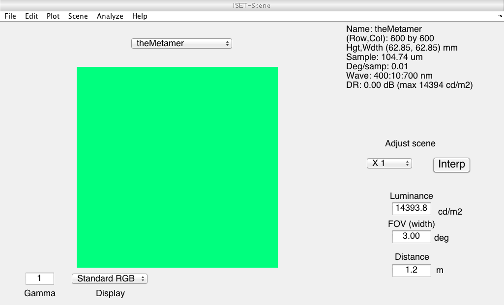
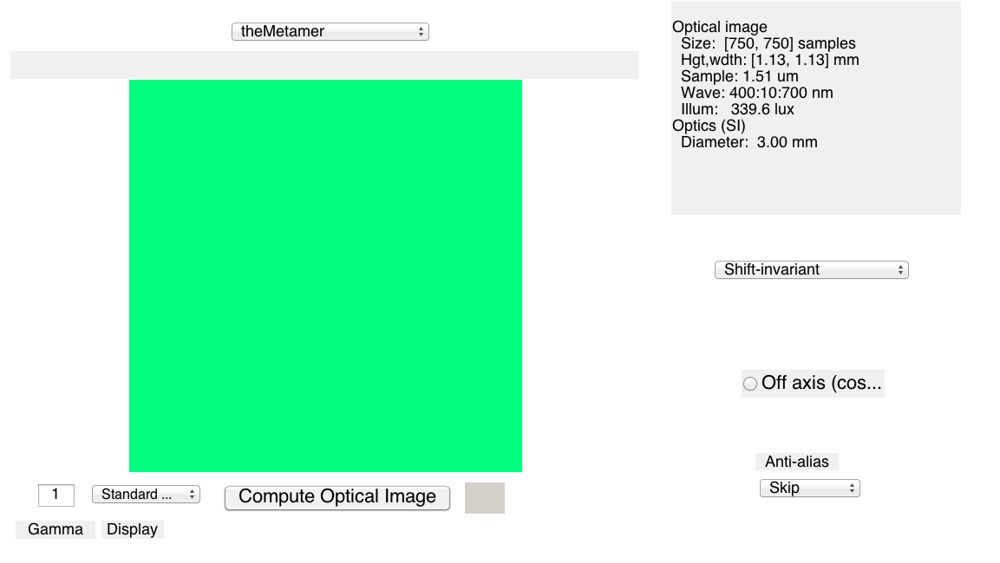
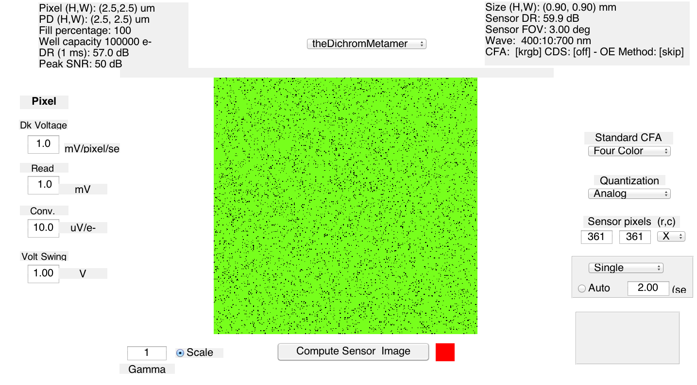
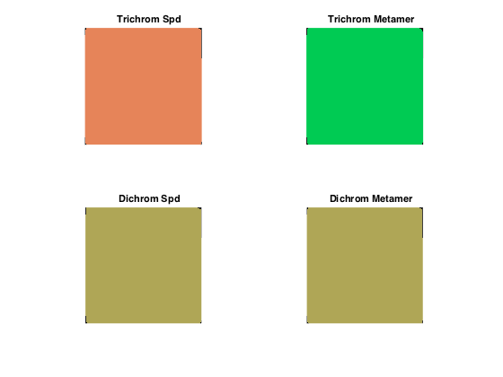
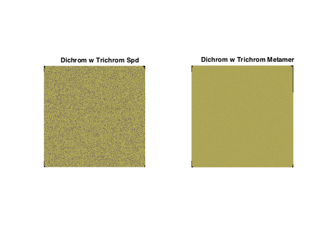

Contents
- Clear, define, etc.
- Hello
- Supress irritating warnings
- Frozen noise, so that we can validate OK
- Figure parameters
- Compute parameters
- Set up optical image
- Set up sensor
- Compute a metameric pair
- Create the scene
- Look at scenes
- Compute optical images and look at them
- Make sensor images
- Create dichromatic versions of the same sensor, and compute those images
- Check dichromatic sensor response arrays
- Isetbio cone demosaicing
- Create the spatiochromatic metamer
- Demosaic to get metamers
- Size of image definitions
- Make and write mosaic images
- Make and write images showing responses
- Write out images for figures
- Restore warning state
- Rethrow error
function varargout = FigSpatioChromaticAliasing(varargin) % % Produce a spatiochromatic alias for mosaic responses to a charomatic uniform field. % % The output of this script isn't currently used in the Annual Review % paper, but It might be eventually. It also produces figures that I may % want for my ARVO 2015 talk. % % Based originally on FigBasicAliasing. % % 3/23/15 dhb Wrote it. % 4/20/15 dhb Bring into the validation fold.% 6/29/15 dhb Fix way we set up coneP to be more robust -- old less robust code got broken % by some lower level change. varargout = UnitTest.runValidationRun(@ValidationFunction, nargout, varargin); end function ValidationFunction(runTimeParams)
Clear, define, etc.
ieInit;
Hello
UnitTest.validationRecord('SIMPLE_MESSAGE', sprintf('%s',mfilename)); outputDir = sprintf('%s_Output',mfilename); if (~exist(outputDir,'dir')) mkdir(outputDir); end
Supress irritating warnings
warnS = warning('off','images:initSize:adjustingMag'); try
Frozen noise, so that we can validate OK
randomSeedValue = 26;
rng(randomSeedValue);
Figure parameters
curDir = pwd;
masterFigParamsDir = getpref('bfScripts','masterFigParamsDir');
cd(masterFigParamsDir);
figParams = MasterFigParams;
cd(curDir);
if (exist('../SecondaryFigParams','file'))
cd ..
figParams = SecondaryFigParams(figParams);
cd(curDir);
end
figParams.resizeScale = 1;
UnitTest.validationData('figParams', figParams);
Compute parameters
if (runTimeParams.inStandAloneMode) sceneDegrees = 3; extractDegrees = 1; gratingCpd = 0; SCALESRGBMethod = 1; outputSuffix = sprintf('_%dcpd',gratingCpd); % This branch is executed when you run from a validation script, and % should be left alone so that the parameters at runtime match those used % when the validation data were stored. else sceneDegrees = 3; extractDegrees = 1; gratingCpd = 0; SCALESRGBMethod = 1; outputSuffix = sprintf('_%dcpd',gratingCpd); end
Set up optical image
I don't think this code actually turns off the optics at present. What looks like it would work is to insert optics = opticsSet(optics,'model','skip') in place of the current set of 'otf method'.
oi = oiCreate('human'); optics = oiGet(oi,'optics'); optics = opticsSet(optics,'off axis method','skip'); optics = opticsSet(optics,'otf method','skip otf'); oi = oiSet(oi,'optics',optics);
Set up sensor
Do this early to get cone spectral sensitivities
The isetbio cone default is for 200 linear cones per degree in the fovea. This seems high for the central 1 degree overall, but might be correct right at the center. So we adjust via pixel size.
coneP = coneCreate('human'); coneP = coneSet(coneP,'spatial density',[0.0 0.625 0.325 .05]); sensorTrichrom = sensorCreate('human',[],coneP); sensorTrichrom = sensorSet(sensorTrichrom, 'noise flag', 0); sensorTrichrom = sensorSet(sensorTrichrom,'exp time',2); sensorTrichrom = sensorSet(sensorTrichrom,'rows',128); sensorTrichrom = sensorSet(sensorTrichrom,'cols',128); pixel = sensorGet(sensorTrichrom,'pixel'); pixel = pixelSet(pixel,'sizesamefillfactor',(200/120)*[1.5e-6 1.5e-6]); sensorTrichrom = sensorSet(sensorTrichrom,'pixel',pixel);
Compute a metameric pair
This follows FigDichromMetam so that what we do here is matched to what we do there.
% Cone sensitivities. Let's be pros and show unnormalized quantal % sensitivities. And, use isetbio to generate the data for the plots. wave = sensorGet(sensorTrichrom,'wave'); S_in = WlsToS(wave); T_conesQE_in = sensorGet(sensorTrichrom,'spectral qe')'; S = S_in; wls = SToWls(S); T_conesQETrichrom = SplineCmf(S_in,T_conesQE_in(2:4,:),S); T_conesQEDichrom = SplineCmf(S_in,T_conesQE_in([2 4],:),S); UnitTest.validationData('S', S); UnitTest.validationData('T_conesQETrichrom', T_conesQETrichrom); UnitTest.validationData('T_conesQEDichrom', T_conesQEDichrom); % Energy sensitivities. We need these to convert the isomerizations into % the right relative scaling for SRGB rendering. T_conesTrichrom = EnergyToQuanta(S,T_conesQETrichrom')'; T_conesTrichrom = T_conesTrichrom/max(T_conesTrichrom(:)); for ii = 1:3 renderingScaleFactors(ii) = 1/max(T_conesTrichrom(ii,:)); end % Color matching functions load('T_xyz1931'); T_xyz = SplineCmf(S_xyz1931,T_xyz1931,S); UnitTest.validationData('T_xyz', T_xyz); % Some spectra. We treat these as in quantal units, though since we never % say in the paper what they are, it doesn't really matter where we got % them. load sur_mccBabel theSpd = SplineSpd(S_mccBabel,... figParams.spectralConstant*ones(size(sur_mccBabel(:,figParams.whichMCCSquare))) + ... figParams.mccSquareScale*sur_mccBabel(:,figParams.whichMCCSquare) + ... figParams.mccSquareScale2*sur_mccBabel(:,figParams.whichMCCSquare2) + ... figParams.mccSquareScale3*sur_mccBabel(:,figParams.whichMCCSquare3),S); theSpd = 1e18*theSpd/max(theSpd(:)); theSpdConesDichrom = T_conesQEDichrom*theSpd; theSpdConesTrichrom = T_conesQETrichrom*theSpd; UnitTest.validationData('theSpd', theSpd); UnitTest.validationData('theSpdConesDichrom', theSpdConesDichrom); UnitTest.validationData('theSpdConesTrichrom', theSpdConesTrichrom); % Some monitor primaries load B_monitor B = SplineSpd(S_monitor,B_monitor(:,2:3),S); UnitTest.validationData('B', B); % Compute monitor metamer for spd theMetamer = B*inv(T_conesQEDichrom*B)*T_conesQEDichrom*theSpd; theMetamerConesDichrom = T_conesQEDichrom*theMetamer; theMetamerConesTrichrom = T_conesQETrichrom*theMetamer; UnitTest.validationData('theMetamer', theMetamer); UnitTest.validationData('theMetamerConesDichrom', theMetamerConesDichrom); UnitTest.validationData('theMetamerConesTrichrom', theMetamerConesTrichrom);
Create the scene
Spatially uniform field scene
parms.freq = round(gratingCpd*sceneDegrees); parms.contrast = 1; parms.ph = 0;
parms.ang= 0; parms.row = 600; parms.col = 600; parms.GaborFlag=0;
scene = sceneCreate('harmonic',parms);
scene = sceneSet(scene,'wave',wave(:));
scene = sceneSet(scene,'fov',sceneDegrees);
scenePhotonsOriginal = sceneGet(scene,'photons');
[mScene,nScene,~] = size(scenePhotonsOriginal);
% Create versions with our desired spectra
scenePhotonsSpd = zeros(size(scenePhotonsOriginal));
scenePhotonsMetamer = zeros(size(scenePhotonsOriginal));
for w = 1:length(wave)
scenePhotonsSpd(:,:,w) = theSpd(w);
scenePhotonsMetamer(:,:,w) = theMetamer(w);
end
sceneSpd = sceneSet(scene,'photons',scenePhotonsSpd);
sceneSpd = sceneSet(sceneSpd,'name','theSpd');
sceneMetamer = sceneSet(scene,'photons',scenePhotonsMetamer);
sceneMetamer = sceneSet(sceneMetamer,'name','theMetamer');
UnitTest.validationData('sceneSpd', sceneSpd);
UnitTest.validationData('sceneMetamer', sceneMetamer);
Look at scenes
These match up pretty well with what happens in FigDichromMetam.
vcAddAndSelectObject(sceneSpd);
vcAddAndSelectObject(sceneMetamer); sceneWindow;
 Compute optical images and look at them
oiSpd = oiCompute(oi,sceneSpd);
oiSpd = oiSet(oiSpd,'name','theSpd');
oiMetamer = oiCompute(oi,sceneMetamer);
oiMetamer = oiSet(oiMetamer,'name','theMetamer');
[mOi,nOi,~] = size(oiGet(oiSpd,'photons'));
vcAddAndSelectObject(oiSpd);
vcAddAndSelectObject(oiMetamer); oiWindow;
UnitTest.validationData('oiSpd', oiSpd);
UnitTest.validationData('oiMetamer', oiMetamer);
 Make sensor images
[sensorTrichrom, ~] = sensorSetSizeToFOV(sensorTrichrom,sceneDegrees,scene,oi);
sensorTrichromSpd = sensorCompute(sensorTrichrom,oiSpd);
sensorTrichromSpd = sensorSet(sensorTrichromSpd,'name','theTrichromSpd');
sensorTrichromMetamer = sensorCompute(sensorTrichrom,oiMetamer);
sensorTrichromMetamer = sensorSet(sensorTrichromMetamer,'name','theTrichromMetamer');
vcAddAndSelectObject(sensorTrichromSpd);
vcAddAndSelectObject(sensorTrichromMetamer);
sensorWindow('scale',1);
UnitTest.validationData('sensorTrichromSpd', sensorTrichromSpd);
UnitTest.validationData('sensorTrichromMetamer', sensorTrichromMetamer);
Create dichromatic versions of the same sensor, and compute those images
Start with the trichromatic version
sensorDichrom = sensorTrichrom;
% Turn every instance of a 3 in the cfa into a 2.
cfaPatternTrichrom = sensorGet(sensorTrichrom,'pattern');
cfaCheckTrichrom = sensorGet(sensorTrichrom,'cone type');
if (any(abs(cfaPatternTrichrom-cfaCheckTrichrom)))
error('CFA inconsistency in trichromatic sensor structure');
end
cfaPatternDichrom = cfaPatternTrichrom;
cfaPatternDichrom(cfaPatternDichrom == 3) = 2;
% Adjust the spatial densities to match what we did to the CFA.
coneTrichrom = sensorGet(sensorTrichrom,'human cone');
spatialDensityTrichrom = coneGet(coneTrichrom,'spatial density');
spatialDensityDichrom = spatialDensityTrichrom;
spatialDensityDichrom(2) = spatialDensityTrichrom(2)+spatialDensityTrichrom(3);
spatialDensityDichrom(3) = 0;
% Now fix up the structures.
coneDichrom = coneTrichrom;
coneDichrom = coneSet(coneDichrom,'spatial density',spatialDensityDichrom);
sensorDichrom = sensorSet(sensorDichrom,'human cone',coneDichrom);
sensorDichrom = sensorSet(sensorDichrom,'cone type',cfaPatternDichrom);
cfaCheckDichrom = sensorGet(sensorDichrom,'pattern');
UnitTest.assert(~any(abs(cfaPatternDichrom-cfaCheckDichrom)),'CFA consistency assertion');
% Compute with our dichromatic sensor
sensorDichromSpd = sensorCompute(sensorDichrom,oiSpd);
sensorDichromSpd = sensorSet(sensorDichromSpd,'name','theDichromSpd');
sensorDichromMetamer = sensorCompute(sensorDichrom,oiMetamer);
sensorDichromMetamer = sensorSet(sensorDichromMetamer,'name','theDichromMetamer');
vcAddAndSelectObject(sensorDichromSpd);
vcAddAndSelectObject(sensorDichromMetamer);
sensorWindow('scale',1);
UnitTest.validationData('sensorDichromSpd', sensorDichromSpd);
UnitTest.validationData('sensorDichromMetamer', sensorDichromMetamer);
 Check dichromatic sensor response arrays
If we are living clean, the two sensor response arrays for the dichromatic sensors should match.
photonsTrichromSpd = sensorGet(sensorTrichromSpd,'photons'); photonsTrichromMetamer = sensorGet(sensorTrichromMetamer,'photons'); photonsDichromSpd = sensorGet(sensorDichromSpd,'photons'); photonsDichromMetamer = sensorGet(sensorDichromMetamer,'photons'); checkDiff = photonsDichromSpd-photonsDichromMetamer; UnitTest.assertIsZero(max(abs(checkDiff(:)))/mean([photonsDichromSpd(:) ; photonsDichromMetamer(:)]),'Dichrom metamer difference check',5e-5);
Isetbio cone demosaicing
That's the way you do, get your money for nothing.
[~,demosaicTrichromSpdLMS] = sensorDemosaicCones(sensorTrichromSpd,'linear'); [~,demosaicTrichromMetamerLMS] = sensorDemosaicCones(sensorTrichromMetamer,'linear'); [~,demosaicDichromSpdLMS] = sensorDemosaicCones(sensorDichromSpd,'linear'); [~,demosaicDichromMetamerLMS] = sensorDemosaicCones(sensorDichromMetamer,'linear'); % Color blindness rendering correction. demosaicDichromSpdLMS = lms2lmsDichromat(demosaicDichromSpdLMS,2,'linear'); demosaicDichromMetamerLMS = lms2lmsDichromat(demosaicDichromMetamerLMS,2,'linear'); UnitTest.validationData('demosaicDichromSpdLMS', demosaicDichromSpdLMS); UnitTest.validationData('demosaicDichromMetamerLMS', demosaicDichromMetamerLMS); % We need everything rendered into SRGB with a common scale factor. This % was chosen by some fussing, and is matched to what we do in % FigDichromMetam. maxVal = max(demosaicTrichromSpdLMS(:)); renderScalar = 0.4; for ii = 1:3 demosaicTrichromSpdLMS(:,:,ii) = renderScalar*demosaicTrichromSpdLMS(:,:,ii)*renderingScaleFactors(ii)/maxVal; demosaicTrichromMetamerLMS(:,:,ii) = renderScalar*demosaicTrichromMetamerLMS(:,:,ii)*renderingScaleFactors(ii)/maxVal; demosaicDichromSpdLMS(:,:,ii) = renderScalar*demosaicDichromSpdLMS(:,:,ii)*renderingScaleFactors(ii)/maxVal; demosaicDichromMetamerLMS(:,:,ii) = renderScalar*demosaicDichromMetamerLMS(:,:,ii)*renderingScaleFactors(ii)/maxVal; end demosaicTrichromSpdSRGB = lms2srgb(demosaicTrichromSpdLMS); demosaicTrichromMetamerSRGB = lms2srgb(demosaicTrichromMetamerLMS); demosaicDichromSpdSRGB = lms2srgb(demosaicDichromSpdLMS); demosaicDichromMetamerSRGB = lms2srgb(demosaicDichromMetamerLMS); UnitTest.validationData('demosaicTrichromSpdSRGB', demosaicTrichromSpdSRGB); UnitTest.validationData('demosaicTrichromMetamerSRGB', demosaicTrichromMetamerSRGB); UnitTest.validationData('demosaicDichromSpdSRGB', demosaicDichromSpdSRGB); UnitTest.validationData('demosaicDichromMetamerSRGB', demosaicDichromMetamerSRGB); % max([demosaicTrichromSpdSRGB(:)' demosaicTrichromMetamerSRGB(:)' demosaicDichromSpdSRGB(:)' demosaicDichromMetamerSRGB(:)']) figure; clf; subplot(2,2,1); hold on imshow(demosaicTrichromSpdSRGB); title('Trichrom Spd'); subplot(2,2,2); hold on imshow(demosaicTrichromMetamerSRGB); title('Trichrom Metamer'); subplot(2,2,3); hold on imshow(demosaicDichromSpdSRGB); title('Dichrom Spd'); subplot(2,2,4); hold on imshow(demosaicDichromMetamerSRGB); title('Dichrom Metamer');
Create the spatiochromatic metamer
Now that we've done all this work, we're going to take the photon array from the trichromatic mosaic and process it with the dichromatic mosaic.
sensorDichromWithTrichomSpd = sensorDichromSpd;
sensorDichromWithTrichomSpd = sensorSet(sensorDichromWithTrichomSpd,'photons',photonsTrichromSpd);
sensorDicrhomWithTrichromMetamer = sensorDichromMetamer;
sensorDichromWithTrichromMetamer = sensorSet(sensorDicrhomWithTrichromMetamer,'photons',photonsTrichromMetamer);
UnitTest.validationData('sensorDichromWithTrichomSpd', sensorDichromWithTrichomSpd);
UnitTest.validationData('sensorDichromWithTrichromMetamer', sensorDichromWithTrichromMetamer);
Demosaic to get metamers
[~,demosaicDichromWithTrichromSpdLMS] = sensorDemosaicCones(sensorDichromWithTrichomSpd,'linear'); [~,demosaicDichromWithTrichromMetamerLMS] = sensorDemosaicCones(sensorDichromWithTrichromMetamer,'linear'); % Color blindness rendering correction. demosaicDichromWithTrichromSpdLMS = lms2lmsDichromat(demosaicDichromWithTrichromSpdLMS,2,'linear'); demosaicDichromWithTrichromMetamerLMS = lms2lmsDichromat(demosaicDichromWithTrichromMetamerLMS,2,'linear'); UnitTest.validationData('demosaicDichromWithTrichromSpdLMS', demosaicDichromWithTrichromSpdLMS); UnitTest.validationData('demosaicDichromWithTrichromMetamerLMS', demosaicDichromWithTrichromMetamerLMS); % We need everything rendered into SRGB with a common scale factor. This % was chosen by some fussing, and is matched to what we do in % FigDichromMetam. for ii = 1:3; demosaicDichromWithTrichromSpdLMS(:,:,ii) = renderScalar*demosaicDichromWithTrichromSpdLMS(:,:,ii)*renderingScaleFactors(ii)/maxVal; demosaicDichromWithTrichromMetamerLMS(:,:,ii) = renderScalar*demosaicDichromWithTrichromMetamerLMS(:,:,ii)*renderingScaleFactors(ii)/maxVal; end demosaicDichromWithTrichromSpdSRGB = lms2srgb(demosaicDichromWithTrichromSpdLMS); demosaicDichromWithTrichromMetamerSRGB = lms2srgb(demosaicDichromWithTrichromMetamerLMS); UnitTest.validationData('demosaicDichromWithTrichromSpdSRGB', demosaicDichromWithTrichromSpdSRGB); UnitTest.validationData('demosaicDichromWithTrichromMetamerSRGB', demosaicDichromWithTrichromMetamerSRGB); %max([demosaicDichromWithTrichromSpdSRGB(:)' demosaicDichromWithTrichromMetamerSRGB(:)']); figure; clf; subplot(1,2,1); hold on imshow(demosaicDichromWithTrichromSpdSRGB); title('Dichrom w Trichrom Spd'); subplot(1,2,2); hold on imshow(demosaicDichromWithTrichromMetamerSRGB); title('Dichrom w Trichrom Metamer');
Size of image definitions
sz = size(cfaPatternTrichrom);
rowStart = round(sz(1)/2 - figParams.imageExtractPixels/2:sz(1));
rowEnd = round(sz(1)/2 + figParams.imageExtractPixels/2:sz(1));
colStart = round(sz(2)/2 - figParams.imageExtractPixels/2:sz(1));
colEnd = round(sz(2)/2 + figParams.imageExtractPixels/2:sz(1));
Make and write mosaic images
[coneMosaicImageTrichrom] = generateConeMosaicImage(cfaPatternTrichrom(rowStart:rowEnd,colStart:colEnd), figParams.imageRepFactor, figParams.mosaicImageSytle);
[coneMosaicImageDichrom] = generateConeMosaicImage(cfaPatternDichrom(rowStart:rowEnd,colStart:colEnd), figParams.imageRepFactor, figParams.mosaicImageSytle);
imwrite(coneMosaicImageTrichrom, fullfile(outputDir,[mfilename '_' 'ConeMosaicTrichrom' '.' figParams.imType]),figParams.imType);
imwrite(coneMosaicImageDichrom, fullfile(outputDir,[mfilename '_' 'ConeMosaicDichrom' '.' figParams.imType]),figParams.imType);
UnitTest.validationData('cfaPatternTrichrom', cfaPatternTrichrom);
UnitTest.validationData('cfaPatternDichrom', cfaPatternDichrom);
UnitTest.validationData('coneMosaicImageTrichrom', coneMosaicImageTrichrom);
UnitTest.validationData('coneMosaicImageDichrom', coneMosaicImageDichrom);
Make and write images showing responses
[~,photonsTrichromImageRawSpd] = generateConePhotonsImage(photonsTrichromSpd(rowStart:rowEnd,colStart:colEnd), figParams.imageRepFactor, figParams.mosaicImageSytle);
[~,photonsTrichromImageRawMetamer] = generateConePhotonsImage(photonsTrichromMetamer(rowStart:rowEnd,colStart:colEnd), figParams.imageRepFactor, figParams.mosaicImageSytle);
[~,photonsDichromImageRawSpd] = generateConePhotonsImage(photonsDichromSpd(rowStart:rowEnd,colStart:colEnd), figParams.imageRepFactor, figParams.mosaicImageSytle);
[~,photonsDichromImageRawMetamer] = generateConePhotonsImage(photonsDichromMetamer(rowStart:rowEnd,colStart:colEnd), figParams.imageRepFactor, figParams.mosaicImageSytle);
tempScaleFactor = max([photonsTrichromImageRawSpd(:) ; photonsTrichromImageRawMetamer(:) ; photonsDichromImageRawSpd(:) ; photonsDichromImageRawMetamer(:)]);
imwrite(photonsTrichromImageRawSpd/tempScaleFactor, fullfile(outputDir,[mfilename '_' 'ConePhotonMapTrichromSpd' '.' figParams.imType]),figParams.imType);
imwrite(photonsTrichromImageRawMetamer/tempScaleFactor, fullfile(outputDir,[mfilename '_' 'ConePhotonMapTrichromMetamer' '.' figParams.imType]),figParams.imType);
imwrite(photonsDichromImageRawSpd/tempScaleFactor, fullfile(outputDir,[mfilename '_' 'ConePhotonMapDichromSpd' '.' figParams.imType]),figParams.imType);
imwrite(photonsDichromImageRawMetamer/tempScaleFactor, fullfile(outputDir,[mfilename '_' 'ConePhotonMapDichromMetamer' '.' figParams.imType]),figParams.imType);
Write out images for figures
imwrite(Expand(demosaicTrichromSpdSRGB(rowStart:rowEnd,colStart:colEnd,:),figParams.imageRepFactor), ... fullfile(outputDir,[mfilename '_' 'DemosaicTrichromSpd' '.' figParams.imType]),figParams.imType); imwrite(Expand(demosaicTrichromMetamerSRGB(rowStart:rowEnd,colStart:colEnd,:),figParams.imageRepFactor), ... fullfile(outputDir,[mfilename '_' 'DemosaicTrichromMetamer' '.' figParams.imType]),figParams.imType); imwrite(Expand(demosaicDichromSpdSRGB(rowStart:rowEnd,colStart:colEnd,:),figParams.imageRepFactor), ... fullfile(outputDir,[mfilename '_' 'DemosaicDichromSpd' '.' figParams.imType]),figParams.imType); imwrite(Expand(demosaicDichromMetamerSRGB(rowStart:rowEnd,colStart:colEnd,:),figParams.imageRepFactor), ... fullfile(outputDir,[mfilename '_' 'DemosaicDichromMetamer' '.' figParams.imType]),figParams.imType); imwrite(Expand(demosaicDichromWithTrichromSpdSRGB(rowStart:rowEnd,colStart:colEnd,:),figParams.imageRepFactor), ... fullfile(outputDir,[mfilename '_' 'DemosaicDichromWithTrichromSpd' '.' figParams.imType]),figParams.imType); imwrite(Expand(demosaicDichromWithTrichromMetamerSRGB(rowStart:rowEnd,colStart:colEnd,:),figParams.imageRepFactor), ... fullfile(outputDir,[mfilename '_' 'DemosaicDichromWithTrichromMetamer' '.' figParams.imType]),figParams.imType);
catch err
Restore warning state
warning(warnS.state,warnS.identifier);
Rethrow error
rethrow(err);
end
end